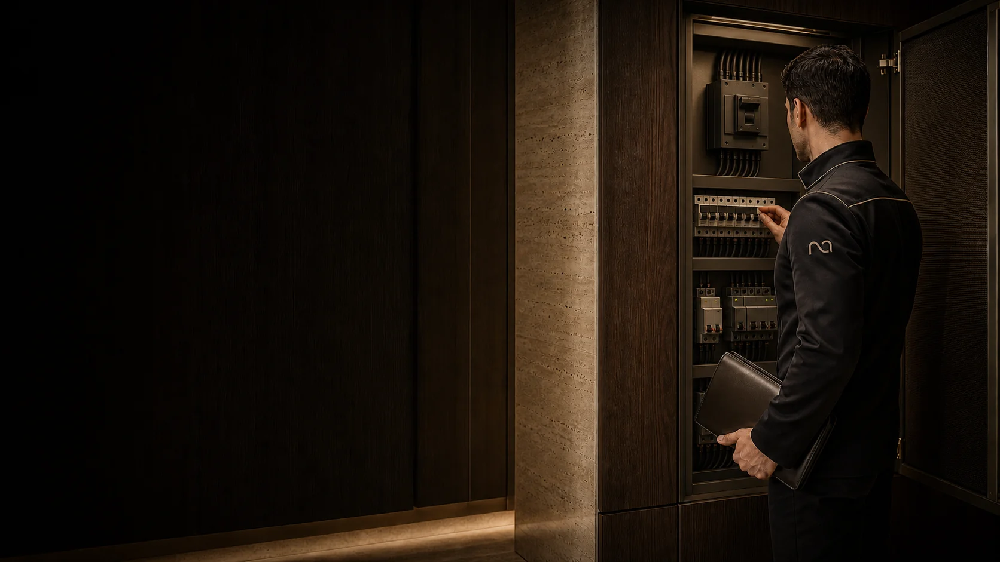

خدمات
-
قراردادهای تعمیر و نگهداری شامل بازدید دورهای تأسیسات برقی، مکانیکی و تجهیزات ساختمان؛ همراه با چکلیست، سرویس، ثبت وضعیت و اعلام موارد نیازمند تعمیر.
-
پیگیری درخواست خرابی، عیبیابی، اعزام نیروی تخصصی، تأمین قطعه و انجام تعمیرات.
-
تنظیم برنامهٔ نظافت ساختمان و هماهنگی با نیروهای نظافت، کنترل و رسیدگی به فضای سبز و مشاعات و هماهنگی با مسئول فضای سبز، ارائهٔ گزارش منظم از وضعیت فنی ساختمان.